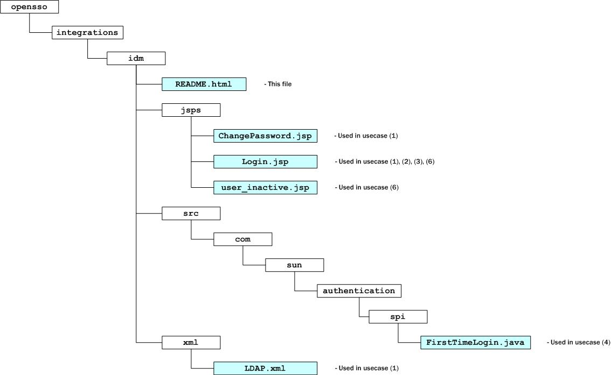

README
( Integration between OpenSSO and Sun Identity Manager )
The files in this directory, are intended as samples, to enable some of the usecases in the context of integration between OpenSSO and Sun Identity Manager. The samples are part of the opensso.zip distribution.
The relevant usecases are:
(1) Configuring "Password-Expiry" or "Administrator-Driven Password-Reset" Behavior
When a user's password is close to expiry, the Directory Server will send a warning, at the time configured in the password policy. When this event occurs, the user will be redirected by OpenSSO, to IDM, where he can change his password, the next time the user attempts to login to OpenSSO.
If the user does not change his password, and lets his password expire, he will need to request the Helpdesk, for a password-reset.
When a help-desk administrator resets an end-user's password, a flag will be set in the user's profile. The help-desk administrator will give the temporary password to the end-user, by email or over the phone.
When the end-user logs in, using the temporary password, he is redirected to Identity Manager's user interface, to reset his password. After his password has been reset, the flag, that was earlier set, will get un-set.
(2) Configuring "Self-Service Password-Reset" or "Forgot Password" Behavior
If
the user has forgotten his password, he should be allowed to change /
reset his password all by himself, without requiring assistance from
a helpdesk.
To identify himself, he should correctly answer his
challenge questions. Unless he does this correctly, he will not be
able to change / reset his password.
(3) Configuring Anonymous-Enrollment Or Self-Registration By User
This usecase requires that an end-user be able to create his account in the system.
The user will be allowed to provide the minimum details required of him, so that an account can be created for him on IDM. This account will get automatically provisioned into OpenSSO.
Such a user-account, would be the most basic account with the least privileges assigned / available to him.
(4) Configuring First-Time User Login Behavior
When a user is logging into the protected application, through OpenSSO, for the first time, after being provisioned, he should be requested to set his challenge/response answers. These answers could later be used to verify his identity, when he wants to reset a forgotten password.
(5) Configuring Single-Logout (SLO) Between IDM And OpenSSO
When the user logs out from the IDM app, he should automatically logged out from OpenSSO as well.
(6) Configuring User-Account Self-UnLock Behavior
When a user's account is locked, as a result of the conditions configured in the password-policy assigned to the user, or as a result of marking his ldap account as inactive, it is possible to allow the user to unlock his account himself, without requiring an intervention from an administrator.
The user's account could have been locked, due to the following reasons:
in-memory account locking
the user may have exceeded the allowed number of failed attempts to login, as configured in the password policy. In such types of locking, the user may remain locked for a set amount of time, and can only reset his password after that time has passed. The "locked state" of the user account is maintained in memory, and no information is written to his LDAP profile.
physical account locking
the user's account may have been locked either explicitly by an administrator, or as a result of some automated processes, by changing the value of the inetuserstatus attribute in his profile, to Inactive.
For a detailed description about how to configure OpenSSO and Sun Identity Manager, for the above usecases, and how to use the sample files included here, please refer to the OpenSSO Integration Guide.
The sample files included here are:
